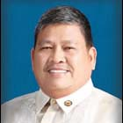
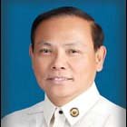

| History |
| Legislators |
| Laws |
| About |
 |
| LEGISLATORS |
| LEGISLATIVE BODY | INCLUSIVE YEARS | LEGISLATIVE DISTRICT/PROVINCE | LEGISLATOR | ||
| 1 | 1st Philippine Legislature | 1907 - 1909 | 1st District Pangasinan | PADILLA, Nicanor |  |
| 2 | 1st Philippine Legislature | 1907 - 1909 | 2nd District Pangasinan | REYES, Deogracias |  |
| 3 | 1st Philippine Legislature | 1907 - 1909 | 3rd District Pangasinan | ALVEAR, Juan |  |
| 4 | 1st Philippine Legislature | 1907 - 1909 | 4th District Pangasinan | FENOY, Lorenzo |  |
| 5 | 1st Philippine Legislature | 1907 - 1909 | 5th District Pangasinan | GONZALEZ, Matias |  |
| 6 | 2nd Philippine Legislature | 1910 - 1912 | 1st District Pangasinan | BRAGANZA, Cirilo |  |
| 7 | 2nd Philippine Legislature | 1910 - 1912 | 2nd District Pangasinan | PADILLA, Mariano | |
| 8 | 2nd Philippine Legislature | 1910 - 1912 | 3rd District Pangasinan | PECSON, Jose T. | |
| 9 | 2nd Philippine Legislature | 1910 - 1912 | 4th District Pangasinan | BALMORI, Joaquin | |
| 10 | 2nd Philippine Legislature | 1910 - 1912 | 5th District Pangasinan | PATAJO, Domingo | |
| 11 | 3rd Philippine Legislature | 1912 - 1916 | 1st District Pangasinan | SOLIS, Vicente |  |
| 12 | 3rd Philippine Legislature | 1912 - 1916 | 2nd District Pangasinan | PEREZ, Rodrigo D. |  |
| 13 | 3rd Philippine Legislature | 1912 - 1916 | 3rd District Pangasinan | CRUZ, Rufo G. |  |
| 14 | 3rd Philippine Legislature | 1912 - 1916 | 4th District Pangasinan | SISON, Pedro M. |  |
| 15 | 3rd Philippine Legislature | 1912 - 1916 | 5th District Pangasinan | SANSANO, Hugo |  |
| 16 | 4th Philippine Legislature | 1916 - 1919 | 1st District Pangasinan | SISON, Modesto |  |
| 17 | 4th Philippine Legislature | 1916 - 1919 | 2nd District Pangasinan | BANAAG, Aquilino |  |
| 18 | 4th Philippine Legislature | 1916 - 1919 | 3rd District Pangasinan | GOMEZ, Teodoro I. |  |
| 19 | 4th Philippine Legislature | 1916 - 1919 | 4th District Pangasinan | GUZMAN, Alejandro F. | |
| 20 | 4th Philippine Legislature | 1916 - 1919 | 5th District Pangasinan | DE GUZMAN, Bernabe |  |
| 21 | 5th Philippine Legislature | 1919 - 1922 | 1st District Pangasinan | BENGSON, Antonio |  |
| 22 | 5th Philippine Legislature | 1919 - 1922 | 2nd District Pangasinan | DE GUZMAN, Alejandro |  |
| 23 | 5th Philippine Legislature | 1919 - 1922 | 3rd District Pangasinan | CAMACHO, Raymundo O. |  |
| 24 | 5th Philippine Legislature | 1919 - 1922 | 4th District Pangasinan | MENDOZA, Alejandro R. |  |
| 25 | 5th Philippine Legislature | 1919 - 1922 | 5th District Pangasinan | GONZALEZ, Ricardo |  |
| 26 | 6th Philippine Legislature | 1922 - 1925 | 1st District Pangasinan | NAVARRO, Mauro |  |
| 27 | 6th Philippine Legislature | 1922 - 1925 | 2nd District Pangasinan | SIGUION REYNA, Lamberto |  |
| 28 | 6th Philippine Legislature | 1922 - 1925 | 3rd District Pangasinan | CAMACHO, Raymundo O. | |
| 29 | 6th Philippine Legislature | 1922 - 1925 | 4th District Pangasinan | SISON, Eusebio V. |  |
| 30 | 6th Philippine Legislature | 1922 - 1925 | 5th District Pangasinan | GONZALEZ, Ricardo | |
| 31 | 7th Philippine Legislature | 1925 - 1927 | 1st District Pangasinan | BRAGANZA, Enrique |  |
| 32 | 7th Philippine Legislature | 1925 - 1927 | 2nd District Pangasinan | SIAPNO, Isidoro | |
| 33 | 7th Philippine Legislature | 1925 - 1927 | 3rd District Pangasinan | DE LA CRUZ, Servillano |  |
| 34 | 7th Philippine Legislature | 1925 - 1927 | 4th District Pangasinan | SISON, Eusebio V. | |
| 35 | 7th Philippine Legislature | 1925 - 1927 | 5th District Pangasinan | SANCHEZ, Evaristo P. | |
| 36 | 8th Philippine Legislature | 1928 - 1930 | 1st District Pangasinan | PECSON, Potenciano | |
| 37 | 8th Philippine Legislature | 1928 - 1930 | 2nd District Pangasinan | PEREZ, Eugenio |  |
| 38 | 8th Philippine Legislature | 1928 - 1930 | 3rd District Pangasinan | CRUZ, Rufo G. | |
| 39 | 8th Philippine Legislature | 1928 - 1930 | 4th District Pangasinan | SISON, Eusebio V. | |
| 40 | 8th Philippine Legislature | 1928 - 1930 | 5th District Pangasinan | MILLAN, Juan G. | |
| 41 | 9th Philippine Legislature | 1931 - 1934 | 1st District Pangasinan | PECSON, Potenciano | |
| 42 | 9th Philippine Legislature | 1931 - 1934 | 2nd District Pangasinan | PEREZ, Eugenio | |
| 43 | 9th Philippine Legislature | 1931 - 1934 | 3rd District Pangasinan | MEJIA, Antonio C. | |
| 44 | 9th Philippine Legislature | 1931 - 1934 | 4th District Pangasinan | SISON, Eusebio V. | |
| 45 | 9th Philippine Legislature | 1931 - 1934 | 5th District Pangasinan | MILLAN, Juan G. | |
| 46 | 10th Philippine Legislature | 1934 - 1935 | 1st District Pangasinan | PECSON, Potenciano | |
| 47 | 10th Philippine Legislature | 1934 - 1935 | 2nd District Pangasinan | PEREZ, Eugenio | |
| 48 | 10th Philippine Legislature | 1934 - 1935 | 3rd District Pangasinan | MARAMBA, Daniel |  |
| 49 | 10th Philippine Legislature | 1934 - 1935 | 4th District Pangasinan | PRIMICIAS, Cipriano Sr. P. |  |
| 50 | 10th Philippine Legislature | 1934 - 1935 | 5th District Pangasinan | RAMOS, Narciso |  |
| 51 | 1st National Assembly (Commonwealth) | 1935 - 1938 | 1st District Pangasinan | RAMOS, Anacleto B. |  |
| 52 | 1st National Assembly (Commonwealth) | 1935 - 1938 | 2nd District Pangasinan | PEREZ, Eugenio | |
| 53 | 1st National Assembly (Commonwealth) | 1935 - 1938 | 3rd District Pangasinan | MARAMBA, Daniel | |
| 54 | 1st National Assembly (Commonwealth) | 1935 - 1938 | 4th District Pangasinan | RUPISAN, Nicomedes T. |  |
| 55 | 1st National Assembly (Commonwealth) | 1935 - 1938 | 5th District Pangasinan | RAMOS, Narciso | |
| 56 | 2nd National Assembly (Commonwealth) | 1939 - 1941 | 1st District Pangasinan | RAMOS, Anacleto B. | |
| 57 | 2nd National Assembly (Commonwealth) | 1939 - 1941 | 2nd District Pangasinan | PEREZ, Eugenio | |
| 58 | 2nd National Assembly (Commonwealth) | 1939 - 1941 | 3rd District Pangasinan | MARAMBA, Daniel | |
| 59 | 2nd National Assembly (Commonwealth) | 1939 - 1941 | 4th District Pangasinan | RUPISAN, Nicomedes T. | |
| 60 | 2nd National Assembly (Commonwealth) | 1939 - 1941 | 5th District Pangasinan | RAMOS, Narciso | |
| 61 | National Assembly (Japanese Regime) | 1943 - 1944 | Pangasinan | DE AQUINO, Bernabe | |
| 62 | National Assembly (Japanese Regime) | 1943 - 1944 | Pangasinan | ESTRADA, Santiago U. | |
| 63 | 1st Congress of the Commonwealth (Liberation Period) | 1945 - 1945 | 1st District Pangasinan | BENGZON, Jose P. |  |
| 64 | 1st Congress of the Commonwealth (Liberation Period) | 1945 - 1945 | 2nd District Pangasinan | PEREZ, Eugenio | |
| 65 | 1st Congress of the Commonwealth (Liberation Period) | 1945 - 1945 | 3rd District Pangasinan | BELTRAN, Pascual M. |  |
| 66 | 1st Congress of the Commonwealth (Liberation Period) | 1945 - 1945 | 4th District Pangasinan | PRIMICIAS, Cipriano Sr. P. | |
| 67 | 1st Congress of the Commonwealth (Liberation Period) | 1945 - 1945 | 5th District Pangasinan | RAMOS, Narciso | |
| 68 | 2nd Congress of the Commonwealth | 1946 - 1946 | 1st District Pangasinan | RODRIGUEZ, Juan de G. | |
| 69 | 2nd Congress of the Commonwealth | 1946 - 1946 | 2nd District Pangasinan | PEREZ, Eugenio | |
| 70 | 2nd Congress of the Commonwealth | 1946 - 1946 | 3rd District Pangasinan | BELTRAN, Pascual M. | |
| 71 | 2nd Congress of the Commonwealth | 1946 - 1946 | 4th District Pangasinan | PRIMICIAS, Cipriano Sr. P. | |
| 72 | 2nd Congress of the Commonwealth | 1946 - 1946 | 5th District Pangasinan | RAMOS, Narciso | |
| 73 | 1st Congress of the Republic | 1946 - 1949 | 1st District Pangasinan | RODRIGUEZ, Juan de G. | |
| 74 | 1st Congress of the Republic | 1946 - 1949 | 2nd District Pangasinan | PEREZ, Eugenio | |
| 75 | 1st Congress of the Republic | 1946 - 1949 | 3rd District Pangasinan | BELTRAN, Pascual M. | |
| 76 | 1st Congress of the Republic | 1946 - 1949 | 4th District Pangasinan | PRIMICIAS, Cipriano Sr. P. | |
| 77 | 1st Congress of the Republic | 1946 - 1946 | 5th District Pangasinan | RAMOS, Narciso | |
| 78 | 1st Congress of the Republic | 1947 - 1949 | 5th District Pangasinan | ALLAS, Cipriano S. |  |
| 79 | 2nd Congress of the Republic | 1950 - 1953 | 1st District Pangasinan | SORIANO, Sulpicio R. |  |
| 80 | 2nd Congress of the Republic | 1950 - 1953 | 2nd District Pangasinan | PEREZ, Eugenio | |
| 81 | 2nd Congress of the Republic | 1950 - 1953 | 3rd District Pangasinan | DE GUZMAN, Jose L. |  |
| 82 | 2nd Congress of the Republic | 1950 - 1953 | 4th District Pangasinan | PEREZ, Amadeo J. |  |
| 83 | 2nd Congress of the Republic | 1950 - 1953 | 5th District Pangasinan | ALLAS, Cipriano S. | |
| 84 | 3rd Congress of the Republic | 1954 - 1957 | 1st District Pangasinan | BENGZON, Mario |  |
| 85 | 3rd Congress of the Republic | 1954 - 1957 | 2nd District Pangasinan | PEREZ, Eugenio | |
| 86 | 3rd Congress of the Republic | 1954 - 1957 | 3rd District Pangasinan | PARAYNO, Jose D. |  |
| 87 | 3rd Congress of the Republic | 1954 - 1957 | 4th District Pangasinan | PEREZ, Amadeo J. | |
| 88 | 3rd Congress of the Republic | 1954 - 1957 | 5th District Pangasinan | BENITO, Justino Z.. | |
| 89 | 4th Congress of the Republic | 1958 - 1961 | 1st District Pangasinan | AGBAYANI, Aguedo F. |  |
| 90 | 4th Congress of the Republic | 1958 - 1961 | 2nd District Pangasinan | FERNANDEZ, Angel B. | |
| 91 | 4th Congress of the Republic | 1958 - 1960 | 3rd District Pangasinan | PRIMICIAS, Cipriano Jr. B. |  |
| 92 | 4th Congress of the Republic | 1960 - 1961 | 3rd District Pangasinan | PARAYNO, Jose D. | |
| 93 | 4th Congress of the Republic | 1958 - 1961 | 4th District Pangasinan | PEREZ, Amadeo J. | |
| 94 | 4th Congress of the Republic | 1958 - 1961 | 5th District Pangasinan | MILLAN, Luciano |  |
| 95 | 5th Congress of the Republic | 1962 - 1965 | 1st District Pangasinan | AGBAYANI, Aguedo F. | |
| 96 | 5th Congress of the Republic | 1962 - 1965 | 2nd District Pangasinan | FERNANDEZ, Angel B. | |
| 97 | 5th Congress of the Republic | 1962 - 1965 | 3rd District Pangasinan | PRIMICIAS, Cipriano Jr. B. | |
| 98 | 5th Congress of the Republic | 1962 - 1965 | 4th District Pangasinan | PEREZ, Amadeo J. | |
| 99 | 5th Congress of the Republic | 1962 - 1965 | 5th District Pangasinan | MILLAN, Luciano | |
| 100 | 6th Congress of the Republic | 1966 - 1969 | 1st District Pangasinan | AGBAYANI, Aguedo F. | |
| 101 | 6th Congress of the Republic | 1966 - 1969 | 2nd District Pangasinan | SORIANO, Jack L. | |
| 102 | 6th Congress of the Republic | 1966 - 1969 | 3rd District Pangasinan | PRIMICIAS, Cipriano Jr. B. | |
| 103 | 6th Congress of the Republic | 1966 - 1969 | 4th District Pangasinan | PEREZ, Amadeo J. | |
| 104 | 6th Congress of the Republic | 1966 - 1969 | 5th District Pangasinan | REYES, Jesus M. |  |
| 105 | 7th Congress of the Republic | 1970 - 1972 | 1st District Pangasinan | AGBAYANI, Aguedo F. | |
| 106 | 7th Congress of the Republic | 1970 - 1972 | 2nd District Pangasinan | DE VENECIA, Jose Jr. C. |  |
| 107 | 7th Congress of the Republic | 1970 - 1972 | 3rd District Pangasinan | PRIMICIAS, Corazon V. | |
| 108 | 7th Congress of the Republic | 1972 - 1972 | 3rd District Pangasinan | SISON, Fabian S. |  |
| 109 | 7th Congress of the Republic | 1970 - 1972 | 4th District Pangasinan | VILLAR, Antonio Sr. P. |  |
| 110 | 7th Congress of the Republic | 1970 - 1972 | 5th District Pangasinan | ESTRELLA, Robert B. | |
| 111 | Regular Batasang Pambansa | 1984 - 1986 | Pangasinan, Region I | AGBAYANI, Victor Aguedo E. |  |
| 112 | Regular Batasang Pambansa | 1984 - 1986 | Pangasinan, Region I | CENDAÑA, Gregorio |  |
| 113 | Regular Batasang Pambansa | 1984 - 1986 | Pangasinan, Region I | DE VERA, Felipe P. |  |
| 114 | Regular Batasang Pambansa | 1984 - 1986 | Pangasinan, Region I | DEMETRIA, Demetrio G. |  |
| 115 | Regular Batasang Pambansa | 1984 - 1986 | Pangasinan, Region I | ESTRELLA, Conrado F. |  |
| 116 | Regular Batasang Pambansa | 1984 - 1986 | Pangasinan, Region I | SISON, Fabian S. | |
| 117 | 8th Congress of the Republic | 1987 - 1990 | 1st District Pangasinan | ORBOS, Oscar M. |  |
| 118 | 8th Congress of the Republic | 1987 - 1992 | 2nd District Pangasinan | BENGSON, Antonio III E. |  |
| 119 | 8th Congress of the Republic | 1987 - 1992 | 3rd District Pangasinan | SISON, Fabian S. | |
| 120 | 8th Congress of the Republic | 1987 - 1992 | 4th District Pangasinan | DE VENECIA, Jose Jr. C. | |
| 121 | 8th Congress of the Republic | 1987 - 1992 | 5th District Pangasinan | ESTRELLA, Conrado Jr. B. |  |
| 122 | 8th Congress of the Republic | 1987 - 1992 | 6th District Pangasinan | ESTRELLA, Conrado III M. |  |
| 123 | 9th Congress of the Republic | 1992 - 1995 | 1st District Pangasinan | ORBOS, Oscar M. | |
| 124 | 9th Congress of the Republic | 1992 - 1995 | 2nd District Pangasinan | MENDOZA, Chris F. |  |
| 125 | 9th Congress of the Republic | 1992 - 1995 | 3rd District Pangasinan | ACUÑA, Eric Galo P. |  |
| 126 | 9th Congress of the Republic | 1992 - 1995 | 4th District Pangasinan | DE VENECIA, Jose Jr. C. | |
| 127 | 9th Congress of the Republic | 1992 - 1995 | 5th District Pangasinan | PEREZ, Amadeo Jr. R. |  |
| 128 | 9th Congress of the Republic | 1992 - 1995 | 6th District Pangasinan | ESTRELLA, Conrado III M. | |
| 129 | 10th Congress of the Republic | 1995 - 1998 | 1st District Pangasinan | BRAGANZA, Hernani A. |  |
| 130 | 10th Congress of the Republic | 1995 - 1998 | 2nd District Pangasinan | BENGSON, Antonio III E. | |
| 131 | 10th Congress of the Republic | 1995 - 1998 | 3rd District Pangasinan | ACUÑA, Eric Galo P. | |
| 132 | 10th Congress of the Republic | 1995 - 1998 | 4th District Pangasinan | DE VENECIA, Jose Jr. C. | |
| 133 | 10th Congress of the Republic | 1995 - 1998 | 5th District Pangasinan | PEREZ, Amadeo Jr. R. | |
| 134 | 10th Congress of the Republic | 1995 - 1998 | 6th District Pangasinan | SHAHANI, Ranjit R |  |
| 135 | 11th Congress of the Republic | 1998 - 2001 | 1st District Pangasinan | BRAGANZA, Hernani A. | |
| 136 | 11th Congress of the Republic | 1998 - 2001 | 2nd District Pangasinan | CRUZ, Teodoro C. |  |
| 137 | 11th Congress of the Republic | 1998 - 2001 | 3rd District Pangasinan | TULAGAN, Generoso D. C. |  |
| 138 | 11th Congress of the Republic | 1998 - 2001 | 4th District Pangasinan | LIM, Benjamin S. |  |
| 139 | 11th Congress of the Republic | 1998 - 2001 | 5th District Pangasinan | PEREZ, Amadeo Jr. R. | |
| 140 | 11th Congress of the Republic | 1998 - 2001 | 6th District Pangasinan | SHAHANI, Ranjit R. | |
| 141 | 12th Congress of the Republic | 2001 - 2004 | 1st District Pangasinan | CELESTE, Arthur F. |  |
| 142 | 12th Congress of the Republic | 2001 - 2004 | 2nd District Pangasinan | ESPINO, Amado Jr. T. |  |
| 143 | 12th Congress of the Republic | 2001 - 2004 | 3rd District Pangasinan | TULAGAN, Generoso D. C. | |
| 144 | 12th Congress of the Republic | 2001 - 2004 | 4th District Pangasinan | DE VENECIA, Jose Jr. C. | |
| 145 | 12th Congress of the Republic | 2001 - 2004 | 5th District Pangasinan | COJUANGCO, Mark O. |  |
| 146 | 12th Congress of the Republic | 2001 - 2004 | 6th District Pangasinan | ESTRELLA, Conrado III M. | |
| 147 | 13th Congress of the Republic | 2004 - 2007 | 1st District Pangasinan | CELESTE, Arthur F. | |
| 148 | 13th Congress of the Republic | 2004 - 2007 | 2nd District Pangasinan | ESPINO, Amado Jr. T. | |
| 149 | 13th Congress of the Republic | 2004 - 2007 | 3rd District Pangasinan | TULAGAN, Generoso D. C. | |
| 150 | 13th Congress of the Republic | 2004 - 2007 | 4th District Pangasinan | DE VENECIA, Jose Jr. C. | |
| 151 | 13th Congress of the Republic | 2004 - 2007 | 5th District Pangasinan | COJUANGCO, Mark O. | |
| 152 | 13th Congress of the Republic | 2004 - 2007 | 6th District Pangasinan | ESTRELLA, Conrado III M. | |
| 153 | 14th Congress of the Republic | 2007 - 2010 | 1st District Pangasinan | CELESTE, Arthur F. | |
| 154 | 14th Congress of the Republic | 2007 - 2010 | 2nd District Pangasinan | AGBAYANI, Victor Aguedo E. | |
| 155 | 14th Congress of the Republic | 2007 - 2010 | 3rd District Pangasinan | ARENAS, Ma. Rachel J. |  |
| 156 | 14th Congress of the Republic | 2007 - 2010 | 4th District Pangasinan | DE VENECIA, Jose Jr. C. | |
| 157 | 14th Congress of the Republic | 2007 - 2010 | 5th District Pangasinan | COJUANGCO, Mark O. | |
| 158 | 14th Congress of the Republic | 2007 - 2010 | 6th District Pangasinan | ESTRELLA, Conrado III M. | |
| 159 | 15th Congress of the Republic | 2010 - 2013 | 1st District Pangasinan | CELESTE, Jesus 'Boying' F. |
 |
| 160 | 15th Congress of the Republic | 2010 - 2013 | 2nd District Pangasinan | BATAOIL, Leopoldo N. |  |
| 161 | 15th Congress of the Republic | 2010 - 2013 | 3rd District Pangasinan | ARENAS, Ma. Rachel J. | |
| 162 | 15th Congress of the Republic | 2010 - 2013 | 4th District Pangasinan | DE VENECIA, Ma. Georgina P. |  |
| 163 | 15th Congress of the Republic | 2010 - 2013 | 5th District Pangasinan | COJUANGCO, Kimi S. |  |
| 164 | 15th Congress of the Republic | 2010 - 2013 | 6th District Pangasinan | PRIMICIAS-AGABAS, Marlyn L. |  |
| 165 | 16th Congress of the Republic | 2013 – 2016 | 1st District Pangasinan | Celeste, Jesus "Boying" F. |  |
| 166 | 16th Congress of the Republic | 2013 – 2016 | 2nd District Pangasinan | BATAOIL, Leopoldo N. |  |
| 167 | 16th Congress of the Republic | 2013 – 2016 | 3rd District Pangasinan | ARENAS, Rose Marie "Baby" J. | |
| 168 | 16th Congress of the Republic | 2013 – 2016 | 4th Distric tPangasinan
|
DE VENECIA, Gina P. | |
| 169 | 16th Congress of the Republic | 2014 – 2016 | 5th District Pangasinan | COJUANGCO, Kimi S. | |
| 170 | 16th Congress of the Republic | 2015 – 2016 | 6th District Pangasinan | PRIMICIAS-AGABAS, MARILYN L. |

Congressional Library Bureau
Legislative Library Service